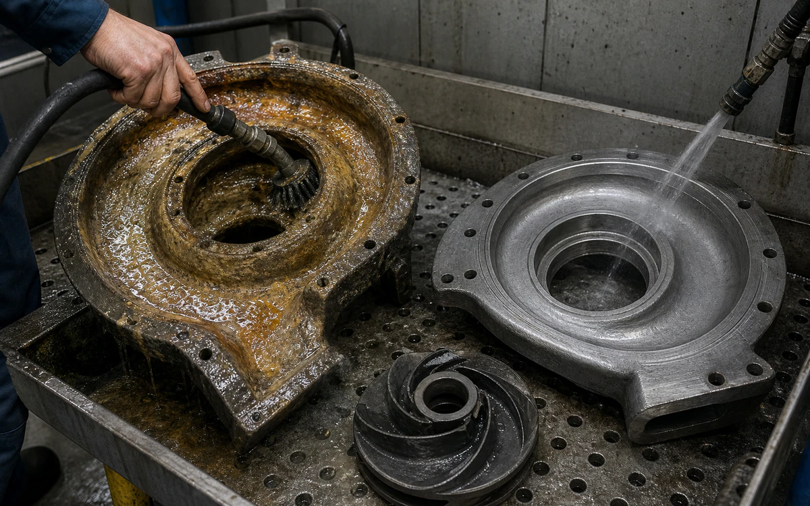
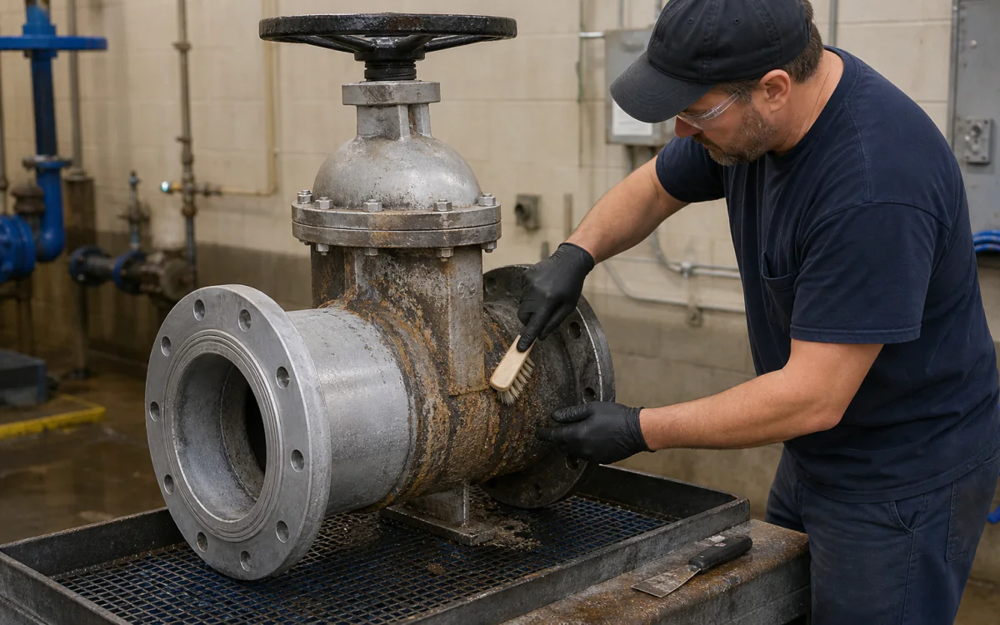
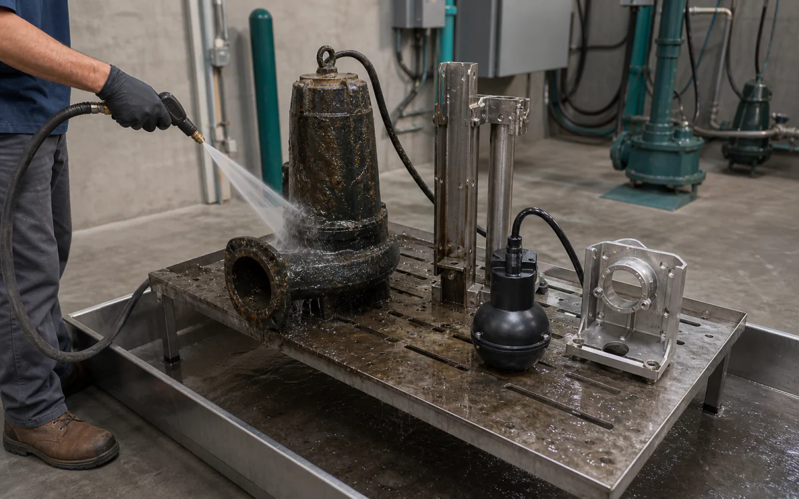

Industries › Municipalities & Water Utilities
Controlled chemistry for scale, rust, grease, and utility flow.
WaterSafe60 helps control pH, scale, and corrosion. HCR removes mineral deposits. HVAC CR cuts through greasy utility work.
- CleanPumps, valves, screens, strainers, heat exchangers, treatment skids, maintenance floors, and out-of-service storage components
- RemoveCarbonate scale, iron and manganese deposit, rust, grease, silt, and treatment-chemical residue
- Start withTake the equipment offline, remove loose buildup, circulate or soak with cleaner, brush, drain, rinse, and inspect
- ProductsVertKleen HVAC CR, WaterSafe60, VertKleen CIP HCR
- HMIS0-0-0 across every VertKleen product offered
- See products, first-test plan, and results
Cleaning chemistry for Municipalities & Water Utilities.
Restore flow, rinse clean, and give crews a method they can repeat on the next job.
See VertKleen resultsWhat matters before you switch chemistry.
Prove removal on the actual soil and surface before replacing the incumbent.
Compare cost per completed job across labor, rinse water, wastewater handling, downtime, and return to service.



Recommended
VertKleen products for Municipalities & Water Utilities.
Match the formula to the soil, surface, and cleaning process.
Where VertKleen fits
Remove scale, rust, and grease from pumps, pipes, basins, and other utility equipment.
- Cleaning job
- Remove scale, rust, and grease from pumps, pipes, basins, and other utility equipment.
- Equipment and surfaces
- Pumps, valves, screens, strainers, heat exchangers, treatment skids, maintenance floors, and out-of-service storage components
- What needs to come off
- Carbonate scale, iron and manganese deposit, rust, grease, silt, and treatment-chemical residue
- Products to start with
- VertKleen HVAC CR, WaterSafe60, VertKleen CIP HCR
- How to clean
- Take the equipment offline, remove loose buildup, circulate or soak with cleaner, brush, drain, rinse, and inspect
- What to compare
- Finished result, crew time, product, water, passes, downtime, and repeat work.
Product files
Get the SDS, TDS, and product records your team needs.
Start with one job